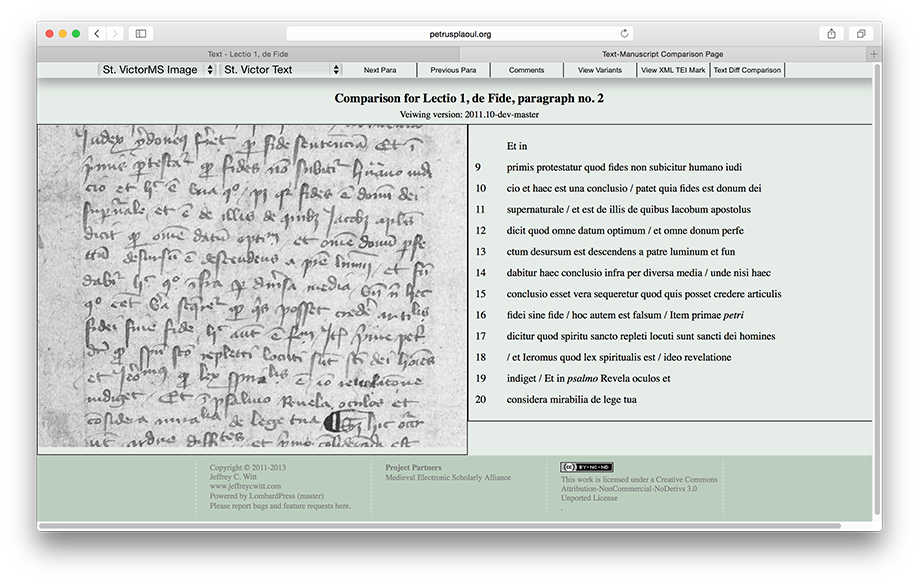
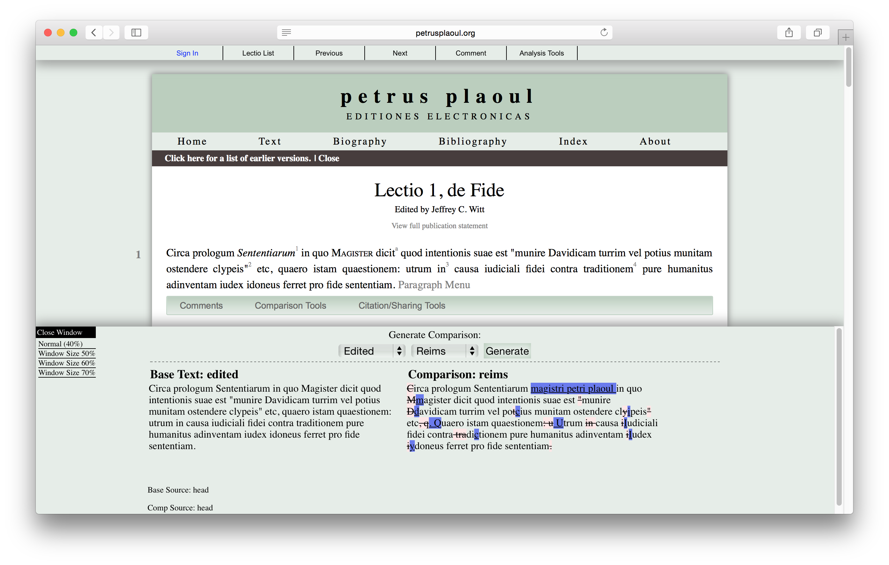
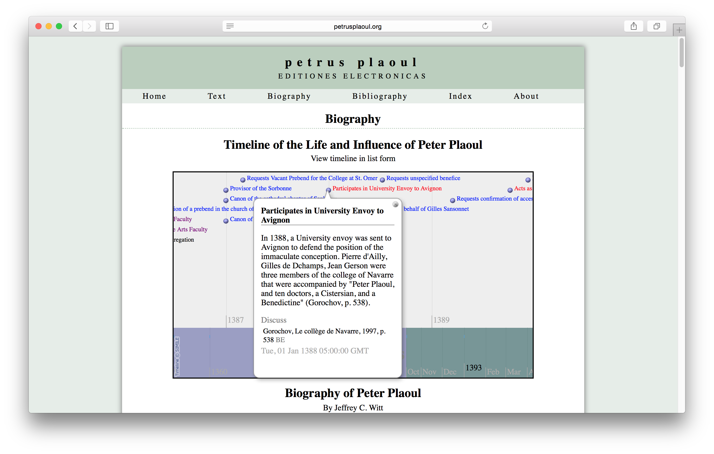
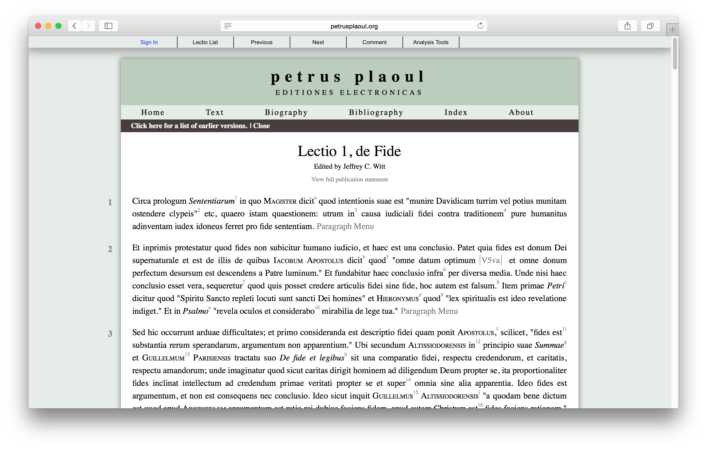
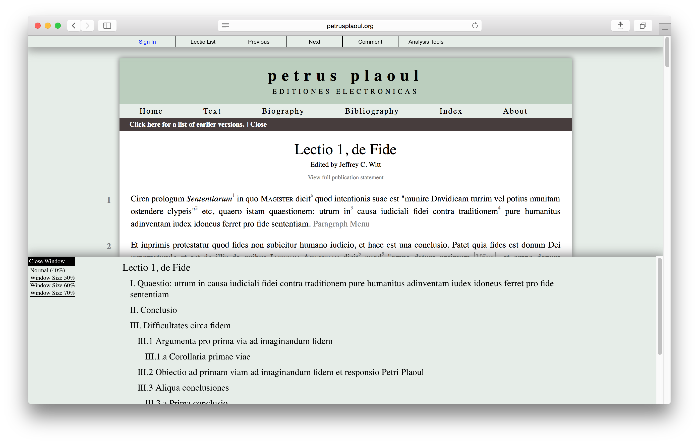

Rethinking the publication of premodern sources: Petrus Plaoul on the Sentences
Table of Contents
Abstract
Jeffrey Witt’s edition of the lectures on Peter Lombard’s Sentences by Peter Plaoul (1353–1415) uses ‘progressive publication’ to make the text public much sooner than has been previously feasible within traditional print models, bringing many long-held scholarly ideals to fulfilment. It is centred on a series of documentary transcriptions linked to manuscript facsimiles, which are combined into a single critical text. This is part of Witt’s broader initiative to create a ‘Sentences Commentary Text Archive’ that seeks to facilitate comparison of the many commentaries written on this work.
Introduction
Many significant works of the Middle Ages are still available only in manuscript form. To read these texts, one must be a skilled Latinist and palaeographer, negotiate with a library to gain access to manuscripts, and have the leisure to work through various scribal errors. They almost entirely inaccessible.
This problem is evident in the case of the commentaries on Peter Lombard’s Sentences, which organizes biblical and patristic sententiae (opinions) into a systematic overview of key debates in theology, becoming the prevailing textbook on the subject in Western Europe after its creation in the middle of the 12th century. From the 13th century until the end of the Middle Ages, it was a standard requirement in formal theological study to comment on this book. Sentences commentaries survive from many of the most influential philosophers and theologians of the late medieval period, such as Alexander of Hales, Thomas Aquinas, and Martin Luther; and there are many more from figures who are much less known. By studying these texts in the context of the others written, one can essentially map the history of Western thought on any of the subjects they address (as shown, for example, by Rosemann 2007). Every commentary forms one piece of an enormous network, and if we could see and link every part, we would have a much clearer idea of the origin and development of philosophical, theological, and social ideas in this period.
This is practical on a large scale only if there is already an edition of the text, and the slow process of publishing texts under the traditional print model inhibits the study of works beyond a limited canon. This has not favoured authors such as Peter Plaoul, a major figure of the University of Paris in the late 14th century who left little written output, drawing limited attention from modern scholars (see Millet 2009). The edition of Peter’s lectures on the Sentences by Jeffrey C. Witt combats the author’s obscurity and takes on a work that would be intolerably expensive to print, since the complexity of its manuscript tradition prevents straightforward resolution into a single collated text. What we need instead is a series of documentary editions, and the site is suitably labelled editiones, in the plural. Witt makes the case that we can only meet the future needs for learning about the tradition of Sentences commentaries by taking advantage of the tools for electronic publishing available to us (Witt 2015), and this is the first serious project to consider out how to do this in practice.
The site is also a brilliant application of the principles of ‘progressive publication’ to medieval texts to make Witt’s work public while offering solutions to the scholarly concerns that made this methodology untenable in a printed format, providing a readable draft of the text that he has emended over time. The site has been online since 2011, a time when there were few models for undertaking and presenting such work. Witt’s edition is an inspiration for anyone unconvinced of the benefits of presenting a medieval text online.
‘Progressive Publication’
Lists of medieval authors and their works (such as Sharpe 1997) are littered with announcements of editions that are nowhere to be found, the instigator having retired, died, or simply lost interest. A later scholar who takes up the project must repeat years of labour. Electronic publishing supplies the means to avoid this situation. Witt calls his model for publicly editing Peter’s unpublished work ‘progressive publication’ (Witt 2013). This idea has already gained traction in the sciences, where it is also called ‘continuous publishing’, but is only slowly making its way to the humanities. It is hardly a radical notion as applied to scholarly editions, as it brings to fruition long-held aspirations of textual critics. The Oxford edition of the Vulgate New Testament, though it began in 1877 and was not finished until 1954, produced almost immediate results by publishing versions of some of its most important manuscripts in a separate series, ‘Old-Latin Biblical Texts’, producing seven volumes between 1883 and 1923 (see Wordsworth 1883). The creators of the Corpus Christianorum originally proposed to publish editions of their texts ‘in rapid succession’ and small print runs to allow the series to stay abreast of the latest research ([Dekkers] 1948, 413; cf. Leemans 2003, 17). With the Internet, this vision can finally be realized, allowing editors to make their initial work public without their inevitable oversights haunting them forever.
The many benefits of this approach likely make its use seem obvious to outsiders, but there is little precedent in the humanities for making preliminary work public, while many scientific disciplines have practised this for decades. We need to be both more forgiving of editors and more vigilant in how we use manuscript sources if we wish the model to gain acceptance in the field of scholarly editing. Especially when one is dealing with unpublished texts, it takes little effort to produce a useful transcription, but a great deal more to produce a printable edition. Publishing in-progress work entails a certain amount of bravery: one must be prepared to make embarrassing mistakes, of the sort that might prompt a reviewer to question the editor’s linguistic capabilities. Because of the potential for misunderstanding the process, Witt has positioned the site as it stands as a ‘finding aid’ meant to precede a full critical edition (Witt 2013). He makes public only those sections that he feels have reached a reasonable level of accuracy; readers can access the rest of the text only by writing the Witt, who issues individual accounts. This approach allows the text to reach those truly interested in the work, though it is rather labour-intensive and adds complexity to the software. It is an interesting criticism of the general trend favouring processes that allow scholarship without human contact, and a helpful middle ground between the idealist’s approach of placing everything in the open and the typical strategy of making one’s work entirely secret. Nonetheless, one hopes that such precautions will soon be unnecessary; it is more user-friendly to warn readers of the text’s status clearly, as used by projects such as the Shelley-Godwin Archive.
If anyone is reluctant to cite such an edition, it is worth remembering that our printed editions are far less reliable than we like to think. For example, the influential commentary on the Pauline epistles by Peter Lombard is typically cited from the Patrologia Latina; it is rarely noted that this is an error-prone reprint of a thinly documented edition from the 16th century (Peter Lombard 1535). It is available everywhere online, and is far more accessible to the typical reader than even the most accurate manuscript; but like most early-modern editions, its relationship to its sources is entirely opaque. Even an imperfect working edition is a vast improvement over such texts if it has a documented manuscript basis and follows modern techniques – and, crucially, is widely available. Scholars continue to make assumptions based on the Patrologia Latina and students suffer through its inaccurate texts every day – sometimes even where a more recent critical edition exists, because that edition is only available in a handful of libraries due to its ruinous cost.
The Sentences Commentary Text Archive
Making texts available more widely available, sooner, is only part of the reason to make a digital edition: another is that print editions simply do not allow us to answer the questions we ask of them. The edition of Peter’s work is only the beginning of an ambitious plan for a Sentences Commentary Text Archive, which will eventually allow precisely the type of comparative study that Sentences commentaries need. As a basis for this, Witt aims to have Sentences commentaries digitized to a common standard. In this initial foray, he took on two projects at once to make Peter’s work available: the editing of the text itself, and the creation of an open-source system used to publish it online, LombardPress, which he has also used for a collaborative edition of Adam Wodeham’s commentary on the Sentences (Hallamma et al. 2011–13).
Given the circumstances of a nascent field, the mere fact that the edition has appeared at all in a usable form is something of an achievement. There are few people who unite the skills of a philosopher, historian, Latinist, palaeographer, and computer scientist: Witt is evidently one of them. His ideas address the problems faced by all who wish to create digital editions of texts written before the modern era. We have no standards for the publication of medieval works, or even expectations for what online editions should record from a manuscript. Those who set about to begin a digital edition of a work typically find that while it is relatively straightforward to mark up a text using the Text Encoding Initiative (TEI) recommendations, displaying the resulting files in a readable format is difficult. Because TEI-based projects often develop their own guidelines (in choosing, for example, among several competing choices for marking abbreviations), they tend not to be compatible with one another, making it difficult to reuse work from other scholars. The fact that software to support editions must at present be written almost from scratch for each project is one of the reasons why digital editions have not become more common. Indeed, it is unlikely that digital editions will begin to gain traction until a publisher of extended editions exists that supports the use of TEI and manages a stringent peer-review process, as the forthcoming Digital Latin Library intends to do.
Witt has made a step towards solving these problems in creating a modular system, LombardPress, that he intends to be reusable for other Sentences commentaries, and has made it available under the GNU General Public Licence. Its documentation is still under development, meaning that it is not yet feasible to reapply it to new projects. Further, it relies on software that is complex to maintain over the long term (PHP and MySQL). Nonetheless, few of the problems he seeks to solve are specific to Sentences commentaries, and there is much that his work could contribute to communities aiming to create a common standard for editing premodern documents (such as EpiDoc, which has expanded beyond its original scope of epigraphy). What we now need is a decentralized editing platform developing Witt’s model that can be applied to any premodern text and is based on the most simple technology available, in combination with centralized repositories where sources can be deposited and combined with other works for research and reading.
Editorial Method
Witt presented the original version of the site as a ‘social edition’ (Witt 2011; inspired by Siemens et al. 2012). The term has not aged well, and Witt now omits any mention of it, but it is still a visible influence. One might argue that the principles of social editing are merely those of making the best use of digital media to improve scholarship and make it more widely known. Witt now frames it in this way:
This site aims to be a stepping stone towards an eventual critical edition of the Sentences commentary of Peter Plaoul. As I have worked on this text, learning more and more about it, both about its length and complexity, it is clear that a supremely polished critical edition of the text is not a one-person job. If it is ever to be completed it will require a team of interested people. But there is a dilemma here. How can people ever become interested in the text if they do not know about its existence or the topics contained within it?
It is not possible to tell how many contributions Witt has received. The comments function is streamlined, helpfully noting the version of the text to which they were referring, but it is rather dull to comb through lists of minor spelling and grammar corrections looking for potentially insightful remarks, and it would be better if one could make desired changes to the text directly. The Wikipedia model of allowing immediate modification is probably not the ideal of most editors; more appropriate to a critical edition directed by a particular editor is the idea of the ‘pull request’ popularized by the Git source control management software, which allows anyone to change their own copy of a file to read precisely as they think it should, then create a proposal explaining their rationale (which the maintainer of the original merges into the main version). Both of these models make it clear who has contributed to a particular file, which might motivate more readers to participate.

Peter’s Sentences commentary is a series of lectures, and some of the surviving witnesses are student notes, varying considerably in places (Glorieux 1939). The edition has so far taken four of seven manuscripts into account, with each source transcribed in full. It is not clear if all witnesses will be included in the final version; an explanation of the editorial method, manuscript selection criteria, and codicological descriptions have yet to be added.
While Witt does not explain his method in these terms, he is essentially creating a documentary edition of each of these texts, of a sort advocated by others (e.g. Pierazzo 2014; van Dalen-Oskam 2015), with an edited text provided (at least notionally) in parallel. It enforces, further, the idea that every historical version of a text is the edition of its scribe(s). The manuscripts’ original capitalization and punctuation is retained (not always consistently), which can be of great service in editing a text for the first time; editors have made many blunders because they did not take the time to understand scribal punctuation on its own terms. The editions could be made more useful by marking where spelling has been modernized (for example, e is silently expanded on many occasions to ae) and abbreviation are expanded, allowing their use for linguistic research, though it must be admitted that the standard TEI guidelines for these features are too verbose to be usable by editors of heavily abbreviated premodern texts. The approach of creating a critical edition founded on a collection of documentary editions is likely to be the most useful to future scholars.

Witt has the germ of something much better in a tool that graphically shows the variants between any two sources, offering the edited text in parallel with the sources. Where we simply need to show the differences between witnesses, this can be done more usably and accurately with visual tools. The version of the comparison tool available at this writing only allows for comparison of two witnesses, and is not clever enough to ignore variants traditionally deemed insignificant (as of spelling, punctuation, and capitalization). Once these problems are solved (towards which Juxta and CollateX have already made significant progress), this will eventually represent a far more accessible alternative to the critical apparatus normally printed at the bottom of the page.
Presentation


This situation could be easily improved by increasing the type size and line spacing, reducing the line length, using typographer’s quotation marks, and distinguishing the menu link more clearly from the text (by moving it into to the right margin, for example). More still could be done by taking advantage of responsive design techniques that now make it a relatively straightforward task to make a single website highly usable on desktops, tablets, and phones. This is key for allowing a text to be usable in a classroom setting, while commuting, or as a reference tool in heated conference debates. Yet reading from paper still carries many benefits that screens cannot achieve. As part of LombardPress, Witt has also written a program transforming his editions into a printable format (using the advanced typesetting capabilities of LaTeX). The focus of creating a digital edition of a text should be to publish it in a technology-independent format, meaning that it is not tied to either paper or a particular encoding scheme, and Witt shows that this can achieved with minimal resources.

Archiving and Licensing
Computer interfaces are passing: it seems unlikely that much of the software supporting the website will still be functional in another decade, and even if it is, it will need to be updated to meet the expectations of future users. For any digital edition, it is critical to archive one’s findings in an open and well-documented format, as well as deposit them in a repository where other scholars might find them. Editors hope that we have a solution to the first problem in the TEI guidelines, which is highly structured, and helps editors to achieve independence from technology through encouraging to record the meaning of their decisions, while most other software focuses on visual appearance. While the latter approach represents how we have been trained to encode textual meaning over centuries, it is much more subjective and less useful, especially when applying texts to new research questions or making writing accessible to users with print disabilities.
To fill the need for a reasonably stable referencing system, the
paragraphs of each section are numbered. This comes with the problem that paragraph
structure often changes as editions progress, and to mitigate this Witt suggests
citing the version of the text along with this, which is easy to understand and cite,
and the site gives a sample citation for each section of the text. The lack of
persistent identifiers is a more serious concern. Even the URI scheme specifically
reflects on the site’s PHP coding, with addresses such as
petrusplaoul.org/text/textdisplay.php?fs=lectio1. Witt could simplify
links and make them more stable by rewriting this as
petrusplaoul.org/text/lectio1. It might be simpler to encourage the
use of the folio and line numbers of a significant manuscript.
The text is provided under a Creative Commons Attribution-NonCommercial-NoDerivatives (CC BY-NC-ND) licence. This implies that others are prohibited from producing their own version of the text, against the traditional practice among editors of basing their work on that of others as much as possible; West notes that many editors in his day, to prevent error, sent their editions to printers by modifying a copy of an older edition using proofing marks rather than produce an entirely new typescript (West 1973, 101–2). In any event, the restriction has limited force in many jurisdictions as applied to scholarly editions. The text of a critical edition is not a copyrightable work in some parts of the world, meaning that a critically edited version of a public-domain work is itself in the public domain (Margoni and Perry 2011). In the European Union, scholarly editions have copyright protection for no more than thirty years (even less as implemented in most countries). The Creative Commons Attribution-ShareAlike (CC BY-SA) licence is more reflective of the historical practice of editing; its use formalizes scholarly expectations and ensures that editors have the same rights around the world. Under this licence, other users must credit past editors and make their improved version of the text available under the same terms. This is just as effective in preventing potential exploitation as restricting it to non-commercial use, and can only serve to promote the original editor’s work.
Conclusion
If Witt had decided to follow the safe and entrenched path of producing an essentially finished text before publishing it in a printed book, few of us would have heard of Peter Plaoul, and we would not be able to read his work on the Sentences with ease for years to come. Even then, it would have been tied to the particular technology of paper, inhibiting its accessibility and limiting its usefulness for research and teaching. Instead, we have an in-progress edition whose relationship to its manuscripts is far more clearly documented than a typical printed edition, and as it develops, it can benefit from the eyes of many readers, rather than having us furtively pencilling corrections into library copies or noting them in reviews. Through his work, Witt is gradually removing the many barriers to the text, bringing it only a translation away from being entirely accessible to a moderately educated audience. This is how we should publish medieval books.
Witt’s edition felt like a vision of the future when it first appeared in 2011. He has overcome the many layers of technical obscurantism necessary to publish a scholarly edition online, and has helped to establish a model that begins to practise the theories editors have discussed for decades but have never had the means to fulfil. Having succeeded in these things, one desires to be able to read more about the thinking and process behind his work, and especially to know more about what he has discovered in Peter Plaoul. For now, Witt has already brought to light the intellectual side of a remarkable historical figure, giving us another glimpse into university teaching in the 14th century and contributing another piece of the puzzle that is the history of Sentences commentaries.
Bibliography
- [Dekkers, Eligius]. 1948. ‘A Proposed New Edition of Early Christian Texts’. Sacris Erudiri 1: 405–14. doi: 10.1484/J.SE.2.305052.
- Glorieux, Palémon. 1939. ‘L’année universitaire 1392–1393 à la Sorbonne à travers les notes d’un étudiant’. Revue des sciences religieuses 19 (4): 429–82. doi: 10.3406/rscir.1939.1801.
- Hallamma, Olli, Jeffrey C. Witt, John Slotemaker, and Severin Kitanov. 2011–13. Adam Wodeham: Editio critica electronica Ordinationis Oxoniensis. http://adamwodeham.org/.
- Leemans, Johan. 2003. ‘Fifty Years of Corpus Christianorum (1953–2003): From Limited Project to Multi-Located Scholarly Enterprise’’. In Corpus Christianorum, 1953–2003: Xenium Natalicium. Fifty Years of Scholarly Editing, edited by Johan Leemans and Luc Jocqué, 11–55. Turnhout: Brepols. https://web.archive.org/web/20140826144240/http://www.corpuschristianorum.org/series/pdf/Xenium%20natalicium%201953-2003_1.pdf.
- Margoni, Thomas, and Mark Perry. 2011. ‘Scientific and Critical Editions of Public Domain Works: An Example of European Copyright Law (Dis)Harmonization’. Canadian Intellectual Property Review 27 (1): 157–70. http://ssrn.com/abstract=1961535.
- Millet, Hélène. 2009. ‘Pierre Plaoul (1353–1415): Une grande figure de l’université de Paris éclipsée par Gerson’. In Itinéraires du savoir de l’Italie à la Scandinavie (Xe–XVIe siècle): Études offertes à Elisabeth Mornet, edited by Corinne Péneau, 179–200. Histoire ancienne et médiévale 99. Paris: Publications de la Sorbonne.
- Peter Lombard. 1535. In omnes D. Pauli Apost. Epistolas Collectanea. Paris: Heirs of Jodocus Badius. Reprinted (1854) in PL 191:1297–1696, 192:9–520. https://archive.org/details/petrilongobardi1535collectanea.
- Pierazzo, Elena. 2014. ‘Digital Documentary Editions and the Others’. Scholarly Editing 35. http://www.scholarlyediting.org/2014/essays/essay.pierazzo.html.
- Rosemann, Philipp W. 2007. The Story of a Great Medieval Book: Peter Lombard’s Sentences. Peterborough, ON: Broadview Press.
- Sharpe, Richard. 1997. A Handlist of the Latin Writers of Great Britain and Ireland Before 1540. Publications of the Journal of Medieval Latin 1. Turnhout: Brepols.
- Siemens, Ray, Meagan Timney, Cara Leitch, Corina Koolen, and Alex Garnett. 2012. ‘Toward Modeling the Social Edition: An Approach to Understanding the Electronic Scholarly Edition in the Context of New and Emerging Social Media’. Literary and Linguistic Computing 27 (4): 445–61. doi: 10.1093/llc/fqs013.
- van Dalen-Oskam, Karina. 2015. ‘In Praise of the Variant Analysis Tool: A Computational Approach to Medieval Literature’. In Texts, Transmissions, Receptions: Modern Approaches to Narratives, edited by André Lardinois, Sophie Levie, Hans Hoeken, and Christoph Lüthy, 35–54. Radboud Studies in Humanities 1. Leiden: Brill. doi: 10.1163/9789004270848_004.
- West, Martin L. 1973. Textual Criticism and Editorial Technique Applicable to Greek and Latin Texts. Stuttgart: Teubner.
- Witt, Jeffrey C. 2011. ‘Letter to the Reader’. Petrus Plaoul. Editio critica electronica Commentarii in libris Sententiarum. March 23. https://web.archive.org/web/20120724113759/http://www.jeffreycwitt.com/plaoul/.
- Witt, Jeffrey C. 2013. ‘About’. Petrus Plaoul. Editiones electronicas. https://web.archive.org/web/20140629210844/http://petrusplaoul.org/about/.
- Witt, Jeffrey C. 2014. ‘Peter Plaoul’s Lecture Commentary on the Sentences: A Canonical Ordered List of Lectures’. Manuscripta 58 (2): 159–270. doi: 10.1484/J.MMS.5.103364.
- Witt, Jeffrey C. 2015. ‘Texts, Media, and Re-Mediation: The Digital Future of the Sentences Commentary Tradition’. In Mediaeval Commentaries on the Sentences of Peter Lombard, edited by Philipp W. Rosemann, 3:504–15. Leiden: Brill. doi: 10.1163/9789004283046_011.
- Wordsworth, John. 1883. The Oxford Critical Edition of the Vulgate New Testament. Oxford. http://hdl.handle.net/2027/yale.39002088448908.
@article{petrus_plaoul,
author = {Dunning, Andrew},
title = {Rethinking the publication of premodern sources: Petrus Plaoul on the
Sentences},
journal = {RIDE – A review journal for digital editions and resources},
number = {3},
year = {2015},
doi = {10.18716/ride.a.3.3},
url = {https://doi.org/10.18716/ride.a.3.3},
}TY - JOUR
AU - Dunning, Andrew
TI - Rethinking the publication of premodern sources: Petrus Plaoul on the
Sentences
T2 - RIDE – A review journal for digital editions and resources
IS - 3
PY - 2015
DA - 2015/11
DO - 10.18716/ride.a.3.3
UR - https://doi.org/10.18716/ride.a.3.3
PB - Institut für Dokumentologie und Editorik e.V.
LA - en
ER - Dunning, A. (2015). Rethinking the publication of premodern sources: Petrus Plaoul on the
Sentences. RIDE – A review journal for digital editions and resources, (3). https://doi.org/10.18716/ride.a.3.3Dunning, Andrew. "Rethinking the publication of premodern sources: Petrus Plaoul on the
Sentences." RIDE – A review journal for digital editions and resources, no. 3, 2015. https://doi.org/10.18716/ride.a.3.3.Dunning, Andrew. "Rethinking the publication of premodern sources: Petrus Plaoul on the
Sentences." RIDE – A review journal for digital editions and resources, no. 3 (2015). https://doi.org/10.18716/ride.a.3.3.